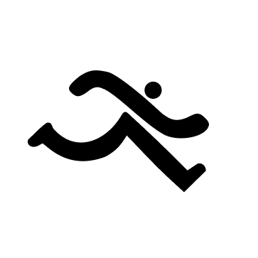
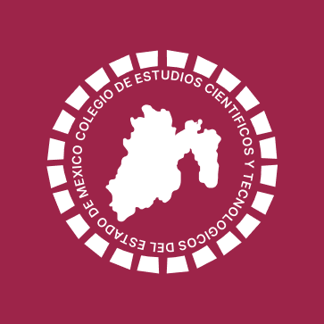
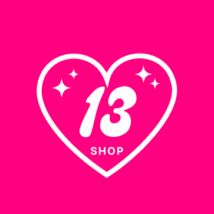
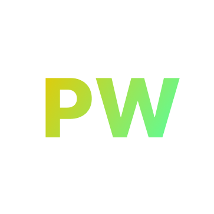
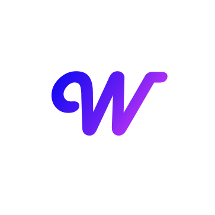
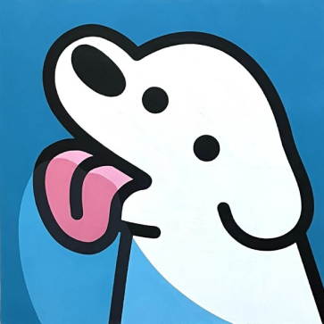
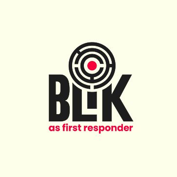
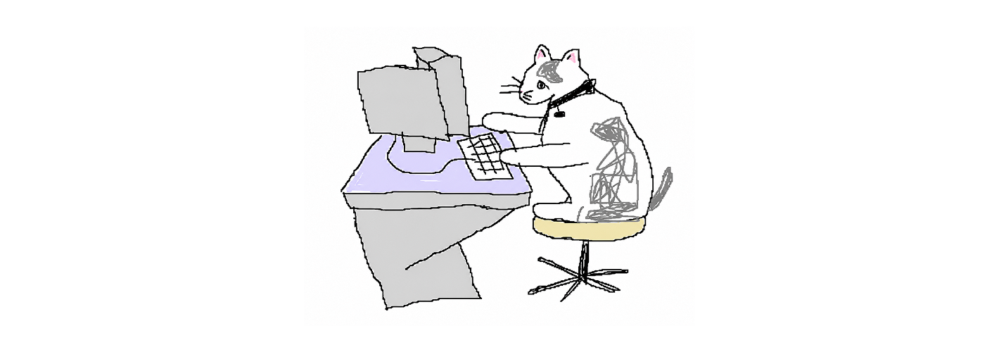

A continuación se muestran algunos de mis proyectos de software favoritos en los que he trabajado durante los últimos años.
Proyectos








Software y desarrollo
A continuación se muestran algunos de mis proyectos de software favoritos en los que he trabajado durante los últimos años.
alex574r.github.io es el sitio web de mi portafolio y también el sitio web en el que te encuentras ahora mismo. Este proyecto fue un absoluto placer de realizar y me planteó un desafío tanto técnico como creativo. A principios de 2024, supe que quería hacer un portafolio para ayudarme en mi búsqueda de empleo. Finalmente, se me ocurrió la idea de este sitio a principios de agosto y comencé a desarrollarlo a principios de junio. Lo he estado desarrollando junto con mi quinto semestre en la escuela.
Potro Wallet es un programa enfocado en una Wallet inspirado en la institución donde estudio (UAEM) ya que tiene una ambientación y colores propios de la misma. Es un proyecto en el cual la idea se da por el año 2023 el cual en ella puedes hacer transacciones con otras cuentas, consultar estados de cuenta y por qué no, puedes generar rendimientos con el dinero dentro de la cuenta.
El programa dejó de desarrollarse en noviembre del mismo año concluyendo con funciones y animaciones que les agradaron mucho a los usuarios, próximamente volverá a ver la luz con nuevas cosas interesantes.
Tráfico es un programa de simulación de tráfico desarrollado por mí y amigos, fue uno de los proyectos más divertidos en el que trabajé con algunos desafíos. Un desafío interesante fue la ambientación mediante una radio la cual cambiabas de estación simulando una radio real, el diseño Pixel Art es algo muy difícil de hacer porque en el mundo de píxeles se trata de una cantidad pequeña de información. Incluso un pixel mal colocado puede hacer que un sprite se lea de una manera totalmente diferente e imprevista.
Para lidiar con esto, desarrollamos un algoritmo para priorizar los contornos, mientras calculábamos el interior con un algoritmo simple de vecino más cercano. Al hacerlo, obtuvimos un sprite relativamente legible al topar con otro Sprite. Fue un desafío sorprendentemente difícil, ya que se entrecruzaba tanto el arte como la programación, pero fue divertido trabajar en él en general.